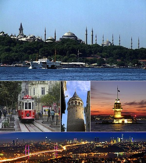

Welcome to Istanbul, Turkey!
 Istanbul (Turkish: İstanbul), historically known as Byzantium and Constantinople[3] (see names of Istanbul for further information), is the largest city of Turkey. Istanbul metropolitan province (municipality) had 13.26 million people living in it as of December, 2010,[1] which is 18% of Turkey's population and the 3rd largest metropolitan area in Europe (if its Asian half is counted) after London and Moscow. The city in its administrative limits had 8.8 million residents counted in the latest Turkish census from 2000.[2] Istanbul is a megacity, as well as the cultural, economic, and financial centre of Turkey. It is located on the Bosphorus Strait and encompasses the natural harbour known as the Golden Horn, in the northwest of the country. It extends both on the European (Thrace) and on the Asian (Anatolia) sides of the Bosphorus, and is thereby the only metropolis in the world that is situated on two continents. Istanbul is a designated alpha world city.
 Mustafa Kemal Atatürk is the founder and first
President of the Republic of Turkey.
Mustafa Kemal Atatürk is the founder and first
President of the Republic of Turkey.